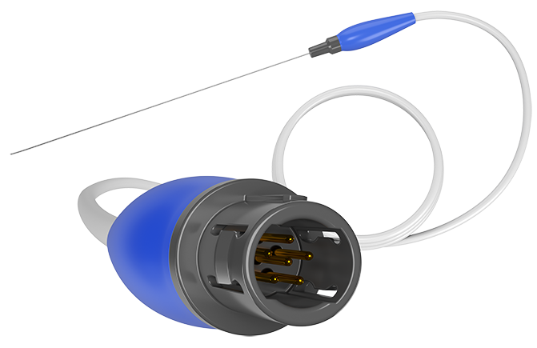
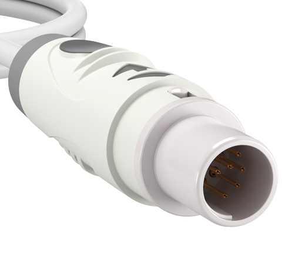
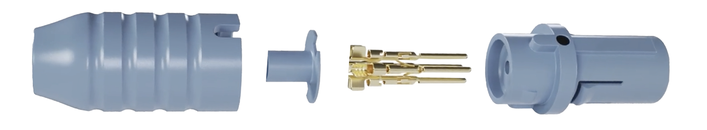

With recent advancements in single-use (disposable) medical technologies, OEMs must achieve a single-use medical connector design that’s cost-effective, scalable, and reliable. Some examples of technologies that require single-use medical connectors are catheters, scopes, and probes. These devices are energy-based and require power (high and low voltage), signal, imaging and sensing, and in some instances, the ability to transfer gas, saline, and waste.
For technologies like these, the single-use connectors can be:
Designed into the handpiece
Attached to the handpiece via a “pigtail” or “dongle” design
Attached to a full-length cable that’s hardwired into the handpiece and plugs directly into the console/generator
The selection process should start by understanding the technology’s specific application and user experience for the doctor/hospital, with patient safety at the forefront.
This approach will help you confidently select the components, materials, and overall design for your single-use medical connector.
Once completed, you are now ready to pursue design considerations for your single-use medical connector.
Critical elements of a single-use medical connector:

Material:
Plastic connectors provide a more competitive price point over metal and are ideal for single-use applications. Common materials to consider are polycarbonate (PC), Acrylonitrile Butadiene Styrene (ABS), and specialty blends of each.
Mating Style:
Choosing between locking, non-locking, and a breakaway connector mating style can make a big difference at high volume.

Gii Purpose-Built Breakaway Connector

Gii Purpose-Built Non-locking Connector

Gii Purpose-Built Locking Connector
Contacts:
A primary component and cost driver in connectors involves the contacts.
Most contacts require gold plating, which will significantly drive cost, especially as the number of contacts per connector increases. While machined contacts with 30 microns of gold plating are the most common, a stamped pin with gold flash will offer you the lowest-cost option in single-use applications. .7mm and .9mm stamped pins can be leveraged in an industry-standard circular push-pull connector design, while 4mm banana pins are common for industry-standard electrosurgical plugs.
When the number of electrical contacts per connector becomes increasingly high (8+), edge cards (PCB (Printed Circuit Board) style – FR4) will begin to present the lowest cost options.
When the number of electrical contacts per connector is five or less, and depending on the application, a TRS, TRRS, TRRRS, and TRS-XL connector might be a viable option.
Depending on your product application, you may also require pneumatic and fluidic contacts that handle gas, saline, and suction.
Fiber contacts for imaging and sensing are becoming more prevalent and increasingly important for many emerging technologies. Consider fiber contacts for imaging, sensing, and data transmission. However, with the high costs and complexities of fiber, coupled with technological advancements like chip-on-tip, their appeal is diminishing.

Exploded view of Gii Purpose-Built Breakaway Connector including stamped contacts with gold flash
Quality, patient safety, and performance should be at the forefront of your design, development, and qualification efforts. Suppliers/partners should be ISO13485 with FDA (Food and Drug Administration) registration as a plus. Your connector must comply with IEC 60601 standards and consist of RoHS 2 materials. Proper qualification and testing should be executed prior to production.
At Global Interconnect, we specialize in helping medical device manufacturers identify the ideal connector solution at any stage of their single-use technology. Engage our team today and let us help you achieve immediate and long-term success.
Want to see how a medical device manufacturer saved $7,000,000 with these design considerations? Click Here.
Need reusable solution for your single use. Click Here
You may also be interested in the following:
About the Author
Chet Potter
VP of Engineering and R&D
Chet Potter graduated Roger Williams University with a Bachelor of Science in Engineering, specializing in Mechanical Engineering. He then joined Global Interconnect in 2013 as a Quality Engineer and now serves as the Vice President of Engineering and R&D. Chet oversees the development and implementation of all engineering processes and builds project teams and structures at Gii’s locations in the U.S. and China. He co-develops new technologies while managing the engineering budget. He also serves as a technical resource for the sales and marketing departments.